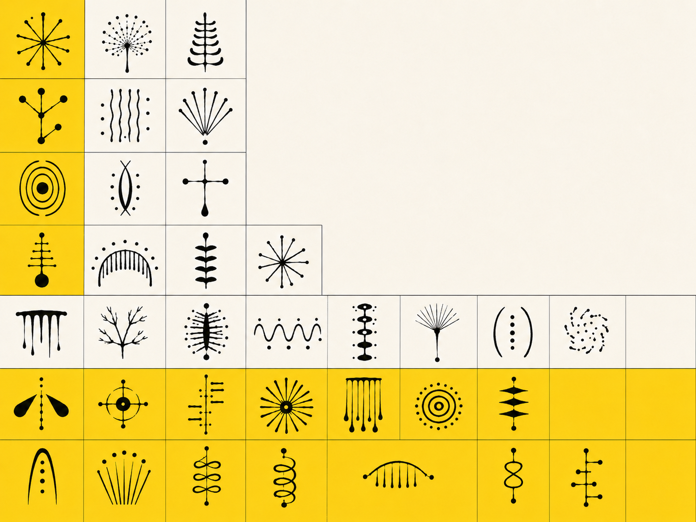
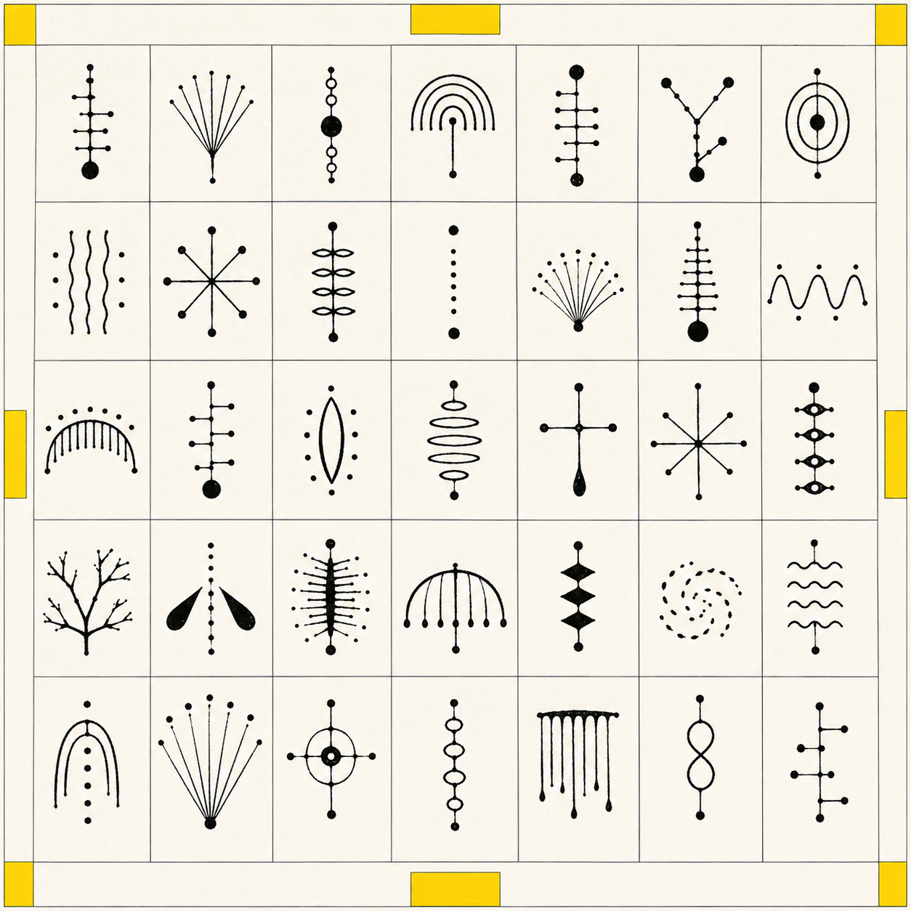
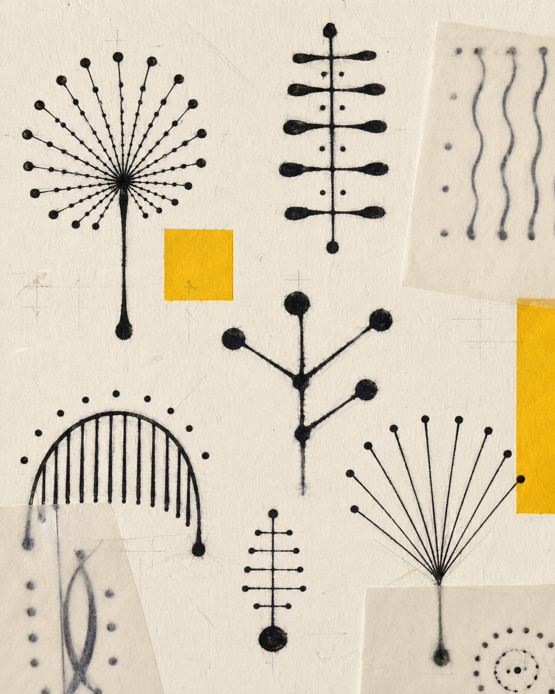
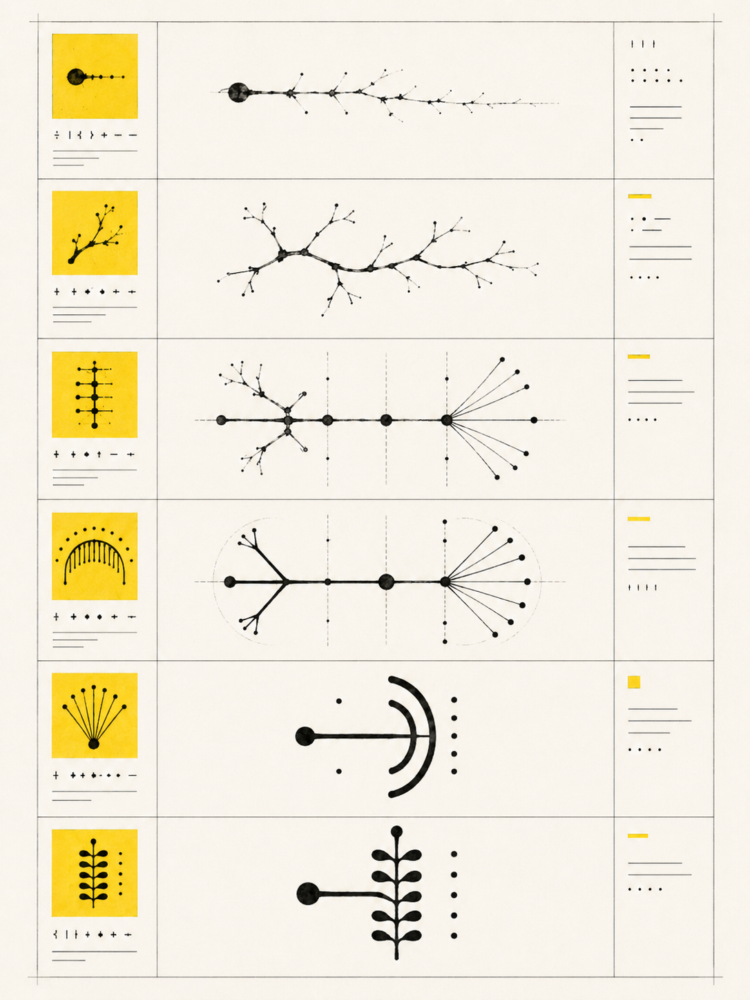
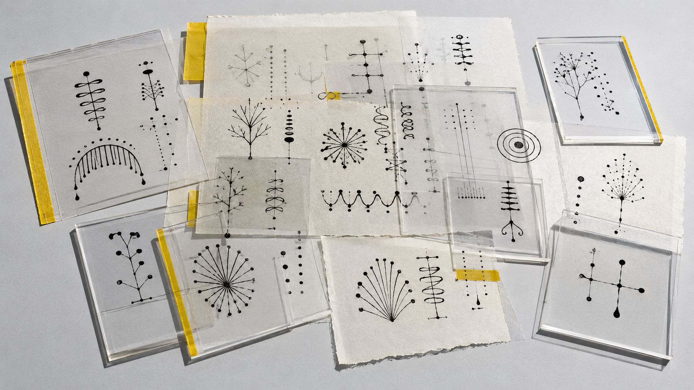

视觉方法 / PROCESS
从原始笔画到复合字形，过程页记录符号在重复、偏移、增殖与磨损中的结构变化。
A01 · TYPE
非人字母表
一套无法释读，却持续诱发语法与来源推测的非人书写系统。

“A01 NONHUMAN ALPHABET｜非人字母表”研究一套无法释读的虚构书写系统。项目通过手绘、扫描、拼贴与数字重组，使字形介于文字结构、生物痕迹和仪器标记之间，并建立重复、变体、组合与磨损规则。视觉成果被整理为具有语法暗示、年代层次和演化路径的档案样本。项目讨论：当书写失去明确语义后，人为何仍会辨认其中的秩序，并为陌生符号推测语言、物种或技术来源。
从原始笔画到复合字形，过程页记录符号在重复、偏移、增殖与磨损中的结构变化。
我最初只是反复描画几种不稳定的形状，随后开始记录它们的重复方式和差异。我发现，符号一旦被编号、并列并留下磨损痕迹，就会获得某种历史感。制作时我不设定完整译文，只保留局部规则，以观察观看者会在何处开始推测语法，最后才承认无法阅读。



